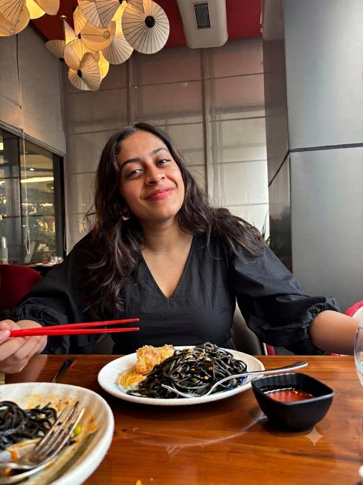
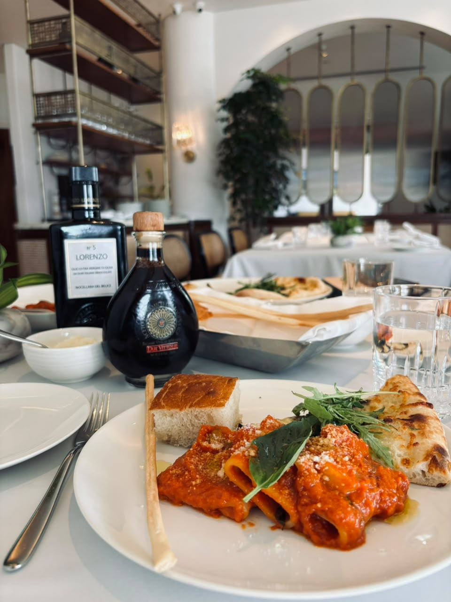
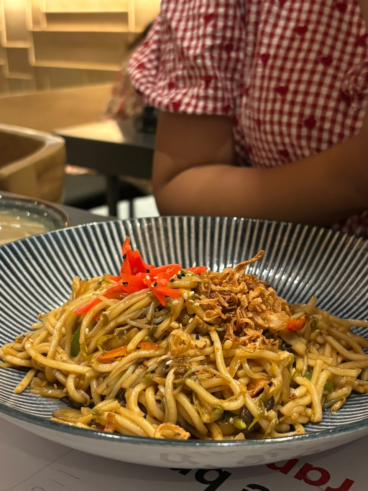
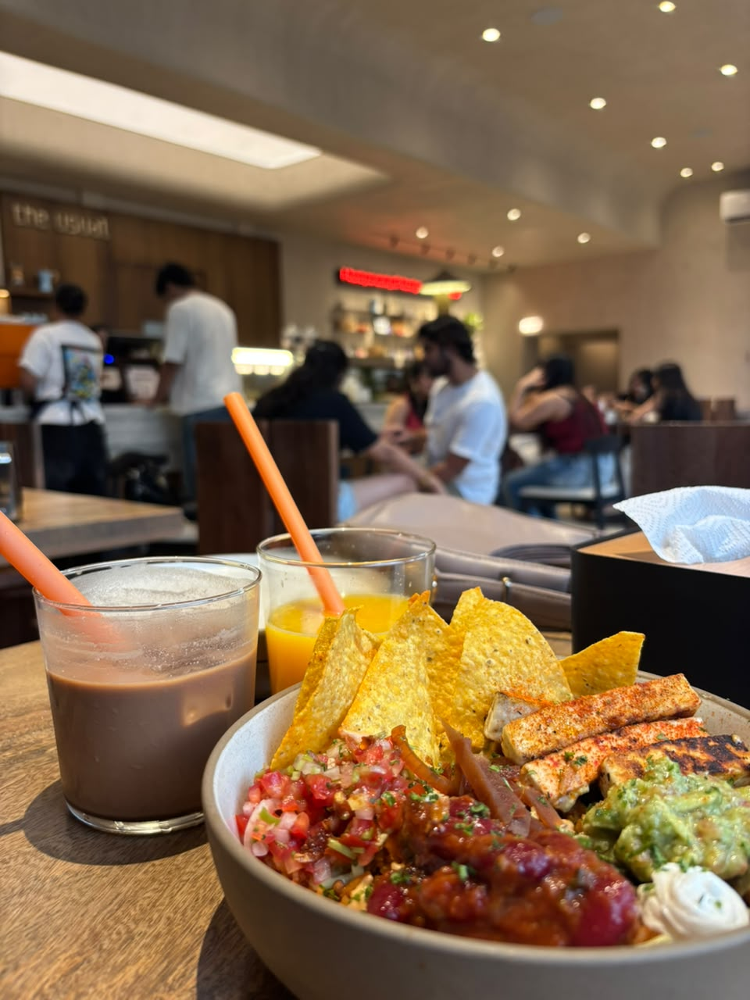
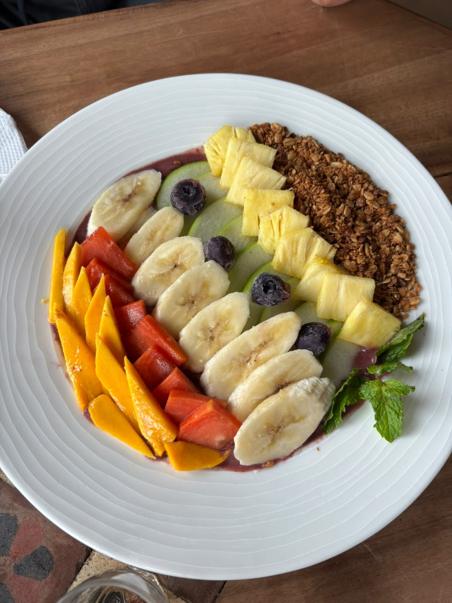
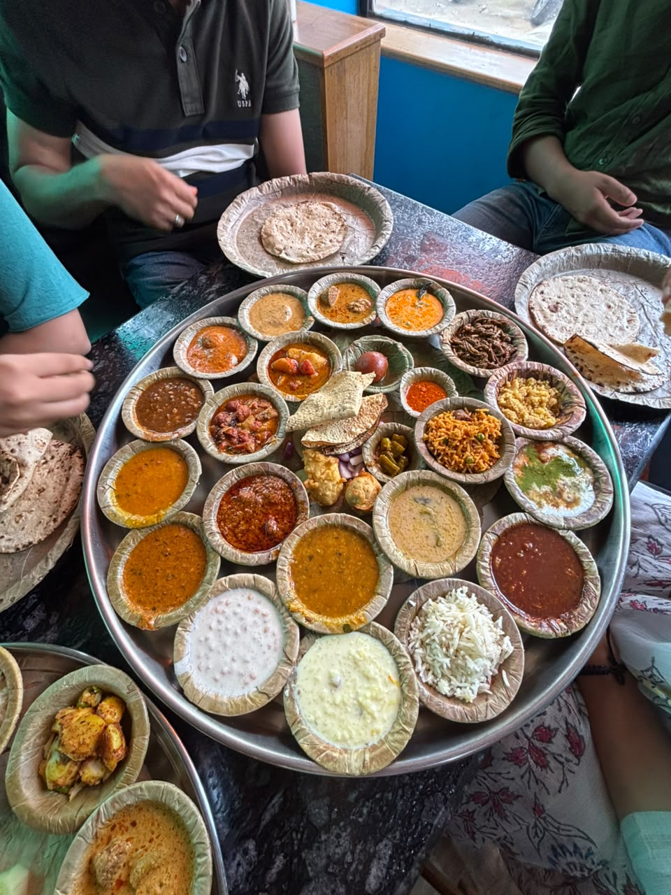

I'm a third-year B.Tech Data Science student in Mumbai, currently deepening my skills in NLP and LLMs while building a portfolio of projects across analytics, machine learning, and automation. I'm working toward a career as a Data Analyst, Data Scientist, or Data Engineer, and I genuinely enjoy the process of taking messy, complicated data and turning it into something meaningful and useful.
Beyond academics and career goals, I'm someone who finds a lot of joy in the people and little things that make life feel full. I love spending time with my friends and family, trying new cuisines, and, honestly, thinking about food more often than I probably should. I love competing with the people I care about over board games, trying new things, and experiencing as much of life as I can — while still wanting to go home at the end of the day and eat the dal baati my mom makes.
I love cooking for people and then insisting they eat it, whether it turned out amazing or absolutely questionable. Feeding the people I love is one of the ways I show them that I care. I love late-night gossip sessions with my friends, being there for them when they need someone to listen, and being the person they can always count on for a shoulder to cry on.
I love karaoke, even if "singing" sometimes just means screaming the lyrics at the top of my lungs. I love the sea, I love dogs, and I love collecting little experiences and memories along the way.
At the heart of it all, I want to build a life where I can stand on my own two feet and never have to depend on anyone to create the life I want. But independence, to me, doesn't mean doing everything alone. I want to build a life that gives me the freedom to choose my own path while still holding on to the people I love — my friends and family — and having them by my side for the rest of my life.
A multi-agent LLM pipeline (Python, Gemini 2.5 Flash) that reads live job-market signals and generates a personalised 7-day interview prep roadmap.
Modelled 260K+ IPL deliveries as a Markov chain to compute momentum shifts and scoring-state transitions, visualised as heatmaps.
A normalised SQL schema for managing patient histories, staff schedules, and appointments.
Part of my college dance club — performed on stage a few times, and it's still one of my favourite ways to let go.
I write poems, on and off. Some are good, most are just for me.
Volunteered at a women and children's shelter — small hours, but they stuck with me.
Python, SQL, HTML, CSS
pandas, scikit-learn, NumPy, Matplotlib, TensorFlow
Excel, Tableau, Power BI, Google Colab, DB Browser for SQLite
Qiskit, Android Studio, AutoCAD, OCR & image processing
NLP, Large Language Models





If you want to know me faster than any About section could, press play.
Whether it's about data, food, or your dog — I'd love to hear from you.